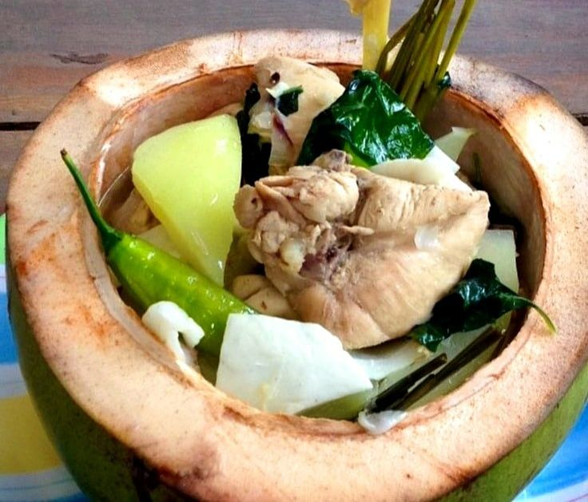

Paksiw na Pata
Central Luzon's slow-braised pork hock with banana blossoms in vinegar-soy sauce.

Bicol Express
A fiery pork stew in coconut milk from the Bicol Region of Luzon.

Chicken Inasal
Grilled chicken from Bacolod, flavorful and smoky.

Chicken Binakol
Chicken cooked in coconut water, native to Visayas.
Chicken Piaparan
A creamy, spicy chicken dish from Maranao culture.
Kinilaw na Isda
Mindanao’s version of ceviche – fresh and zesty!